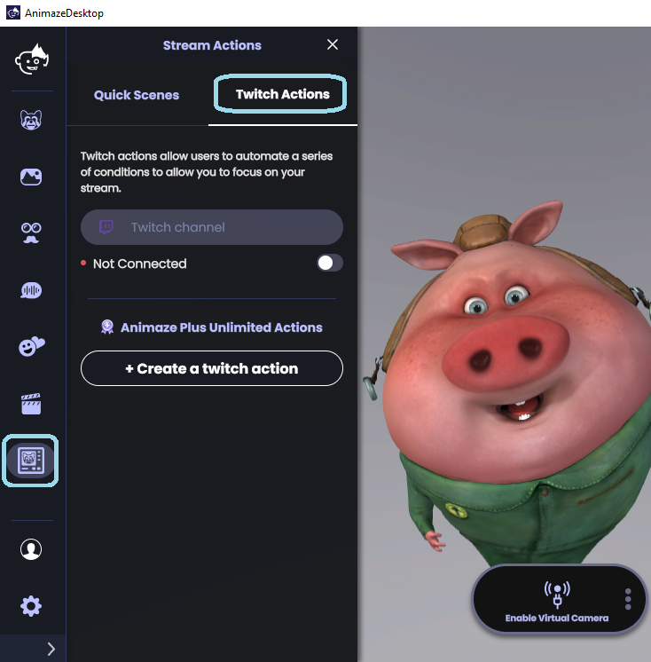
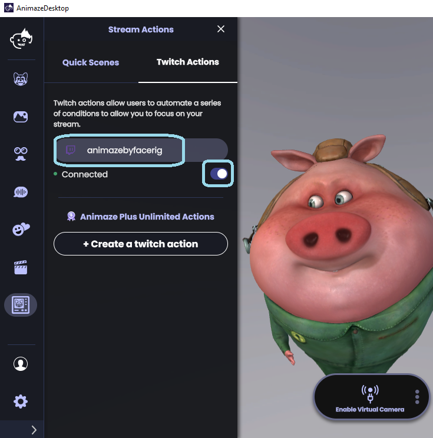
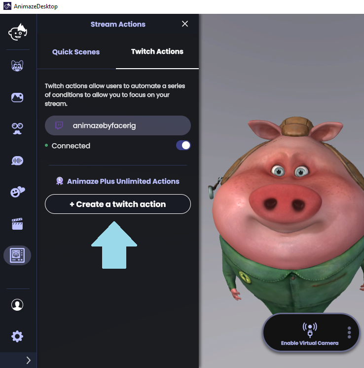
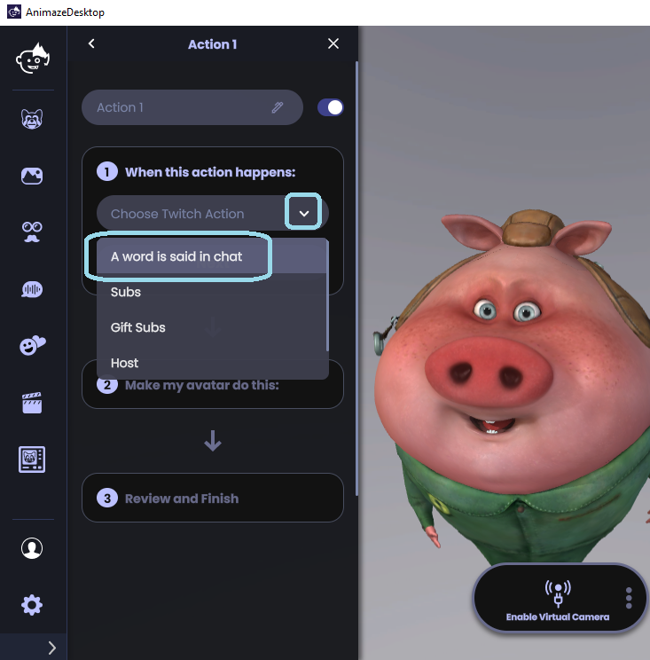
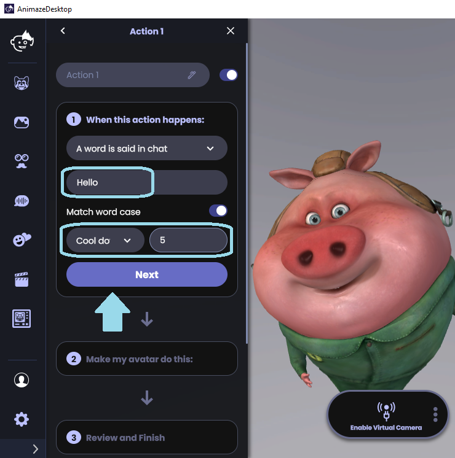
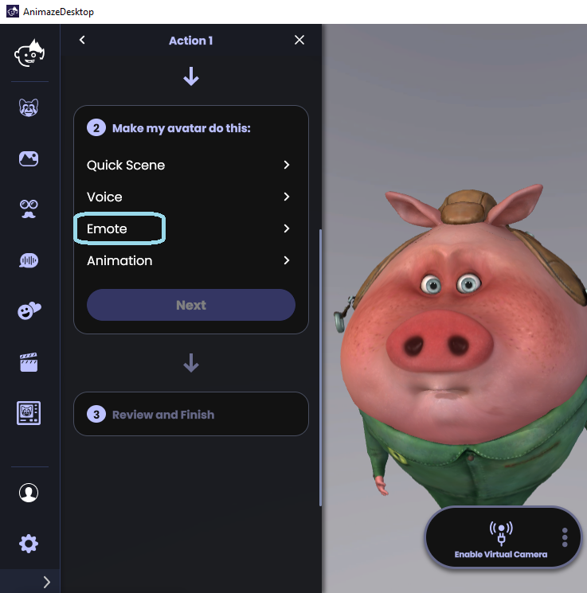
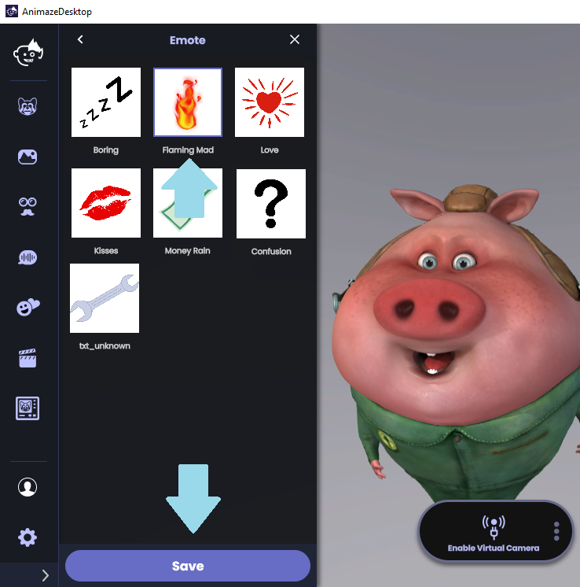
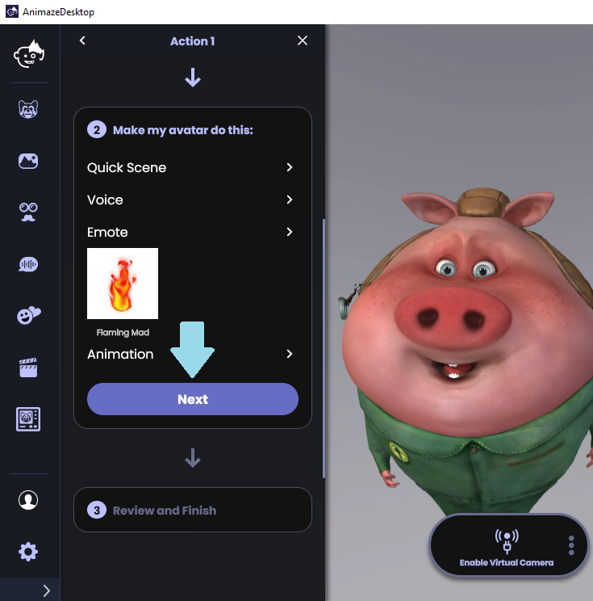
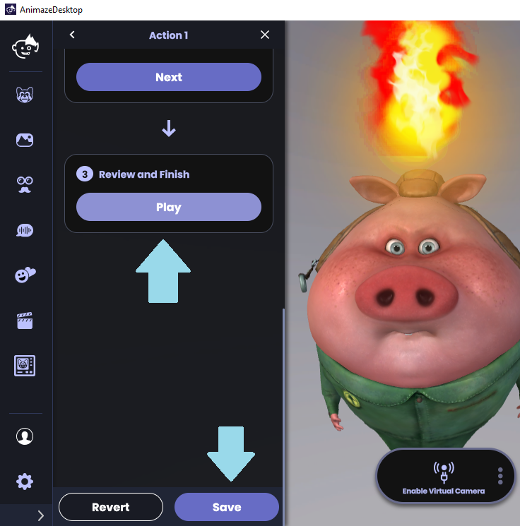

Animaze Desktop: How can I use the Twitch integration?
With Animaze’s Twitch integration, program your avatar to react with an emote or animation, change your scene, or use a voice effect when people type a specific word in the chat, subscribe, gift subs, or when you’re hosting or raiding.
Click on the Quick Scenes icon to open the Stream Actions drawer menu
Click on Twitch Actions

Type the name of your Twitch channel in the “Twitch channel” field. Just enter your channel name. We’ve written www.twitch.tv for you. Use the toggle below the channel field to connect to your Twitch channel and stream.

Click on the “Create a twitch action” button to start creating an action.

Click on the arrow to show the drop-down list of options and choose an option to trigger the avatar’s action: A word said in the chat, Subs, Gift Subs, Host, or Raid.
For this FAQ, we chose A word is said in the chat.

Type the desired word in the field below. When the Match word case toggle is ON, the word is case sensitive; when it is OFF, the word is no longer case sensitive
If desired, set a cooldown timer (in seconds) for triggering the action. For example, entering the number 5 means that the avatar will not respond for five seconds even if the triggering event occurs.

Click on Next, and choose what the avatar will do when the word appears in the chat. Quick Scene (changes the quick scene), Voice (applies a voice effect), Emote (plays an emote), Animation (plays the applicable animation).
For this FAQ, we chose an Emote

Select the Emote that you want to trigger and click on Save in the Emotes drawer menu.

Click on Next after you’ve chosen your desired emote.

Click Play to preview the action that you set up. Click Save to save the action that you created.
